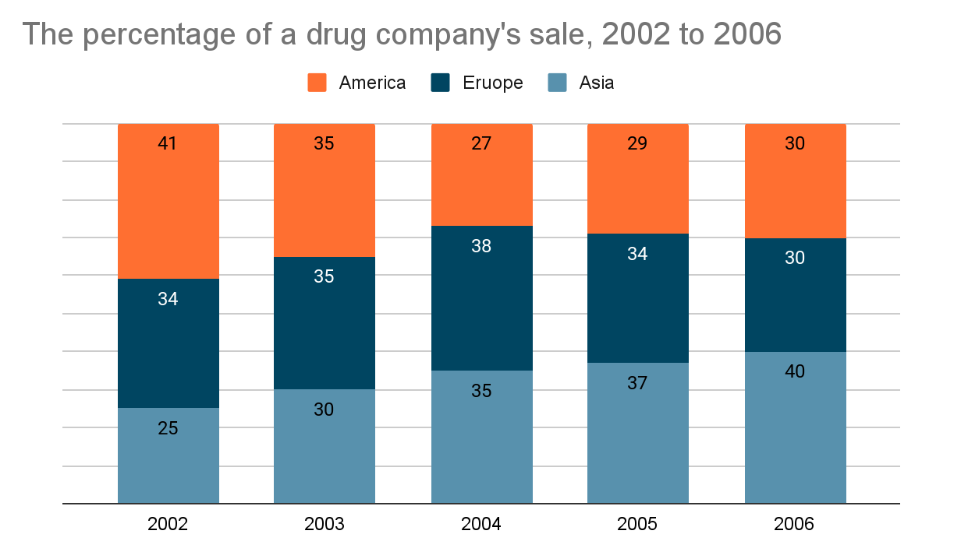

You should spend about 20 minutes on this task.
The chart below shows the percentage of a drug company’s total sales, by region, from 2002 to 2006.Summarise the information by selecting and reporting the main features, and make comparisons where relevant
Write at least 150 words.
You should spend about 40 minutes on this task.
Parents are putting a lot of pressure on their children to succeed. What are the reasons for this? Is it a positive or negative development?
You should write at least 250 words